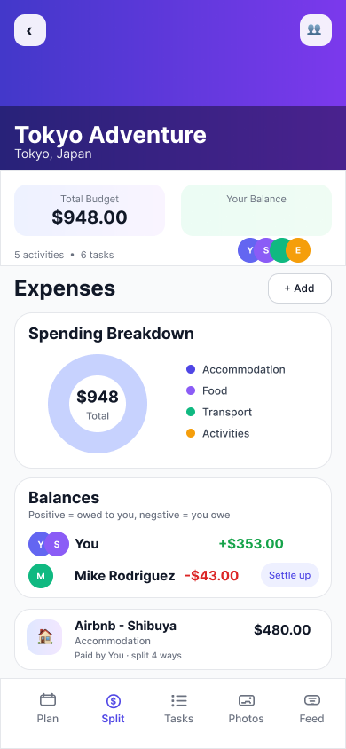
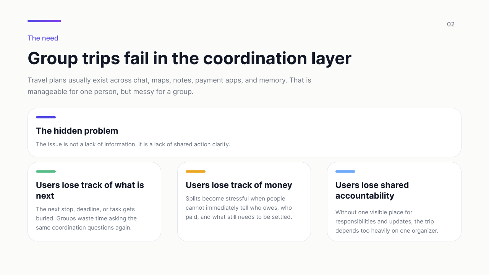
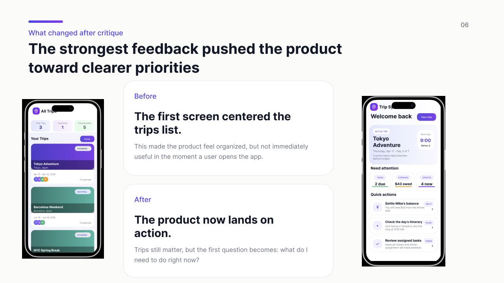
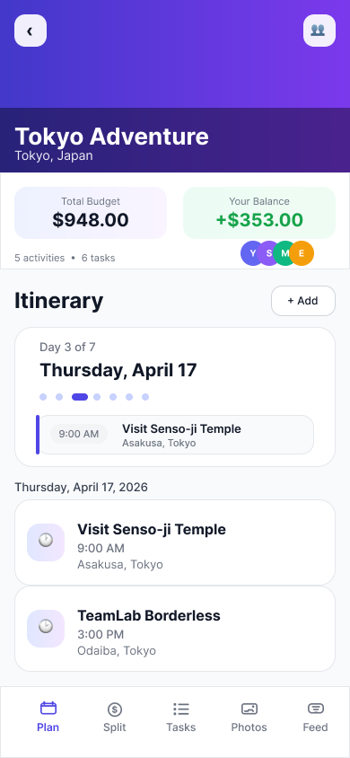

Method 01
Semi-structured interviews
I centered conversations around friends and students who had recently planned group trips, especially people who often become the informal organizer.
Design archive / UX design / 2026
A group travel app concept shaped through UX research into one question: how do you reduce coordination fatigue when plans, money, and responsibilities are split across too many places?
I began by looking at how student and friend groups already plan trips across Google Docs, Sheets, Splitwise, chat, maps, and shared albums. That research reframed the opportunity from "another trip planner" into a shared action layer that helps the whole group know what is next, what is owed, and who owns what.


Trip Sync is a mobile UX concept for friend groups and university students planning trips together. The project asks how a product can lower coordination friction by connecting itinerary, balances, responsibilities, and memory-making in one shared flow.
The work started with research, not screens. I wanted to understand where group travel breaks down, who absorbs the invisible labor of coordinating everyone else, and what kind of interface could reduce that burden instead of adding one more place to check.
Group travel planning already has tools, but the workflow is fragmented. Itineraries live in Google Docs or Sheets, expenses in Splitwise, communication in messaging apps, locations in maps, and memories in shared albums. That setup works until the group needs quick coordination in the moment.
The research framing became clearer very quickly: the real problem is not a lack of travel information. It is the absence of a unified coordination layer. When the state of the trip is scattered, people duplicate work, lose confidence in what is final, and fall back on one organizer to keep everything aligned.

The research phase combined exploratory and qualitative methods to understand what happens before and during a group trip. I focused less on feature wish lists and more on actual behaviors: where people lose track, where roles become uneven, and where trust breaks down.
Methods
Method 01
I centered conversations around friends and students who had recently planned group trips, especially people who often become the informal organizer.
Method 02
I looked at tools such as Splitwise, Google Docs, Sheets, and collaborative planning apps to understand what each one does well and where coordination starts to fragment.
Method 03
Early scenarios and wireframes helped me test which features actually mattered and which ideas were unnecessary in an integrated trip experience.
Research focus
I was trying to map friction across planning versus live travel, understand how responsibilities are distributed, and identify what information groups struggle to keep synchronized.
Findings
Insight 01
Existing tools store information, but they do not reduce the mental load of holding plans, money, roles, and updates together across a group.
Insight 02
Before anyone needs a full archive of trip content, they need quick visibility into the next stop, deadline, or task that requires attention.
Insight 03
Expense features only feel useful when the balance state is transparent. Ambiguous wording makes people less confident about who owes what.
Insight 04
In many groups, one person becomes the bottleneck because updates and responsibilities are not visible enough to be shared across everyone else.
Once the research made the problem sharper, the project moved from a broad group travel idea into a product system with connected surfaces for trips, itinerary, balances, tasks, photos, and activity. The process was less about adding more features and more about tightening the hierarchy around the moments of highest coordination pressure.
The early prototype already covered the main trip management flows, but critique showed that completeness was not enough. I had to decide what should be visible first, what could remain secondary, and how the product could feel lightweight during an active trip instead of heavy or administrative.
I started by tracing how users already move across chat, shared documents, payment tools, and memory apps while trying to keep one trip together.
Trips, itinerary, split, tasks, photos, and activity were treated as connected layers of one system rather than isolated features.
The key shift was designing around the next important action instead of treating the app as a passive place to store trip details.
Feedback helped me identify which parts felt product-like and which parts still behaved like disconnected screens rather than one clear experience.
Three principles carried the rest of the design work: make the next important action visible first, keep itinerary / balances / tasks connected as shared context, and use language that feels clear immediately on a mobile screen.
Critique was the most valuable part of the process because it exposed where the prototype was organized, but not yet product-like. The strongest feedback pushed the concept away from passive browsing and toward shared awareness. Two changes had the biggest impact on the final version.

Improvement 01
The early version centered the trips list. The revised Home page shifted the product toward urgency, context, and direct entry into tasks, balances, and itinerary decisions.
Improvement 02
Renaming the section from "Who owes who" to "Balances" increased scannability and made the money state feel more transparent.
Rather than showing every screen, I chose the ones that best support the core story: immediate context, shared planning, and expense clarity.
Home
The product opens on the live state of the trip.

Itinerary
Trip context, timing, and next stops stay easy to scan.
Balances
Language and hierarchy make shared money easier to read.
The biggest lesson from Trip Sync was that UX research can completely change the product story. A prototype can contain the right features and still communicate the wrong starting point if the hierarchy does not reflect how people actually coordinate.
If I continued the project, I would run more user testing on the revised Home page and balances flow, add stronger edge-case states like overdue tasks and split conflicts, and keep refining how the product supports both planning before the trip and coordination during it.
Trip Sync became strongest when it shifted from being a place to store travel information to being a product that helps a group act together.